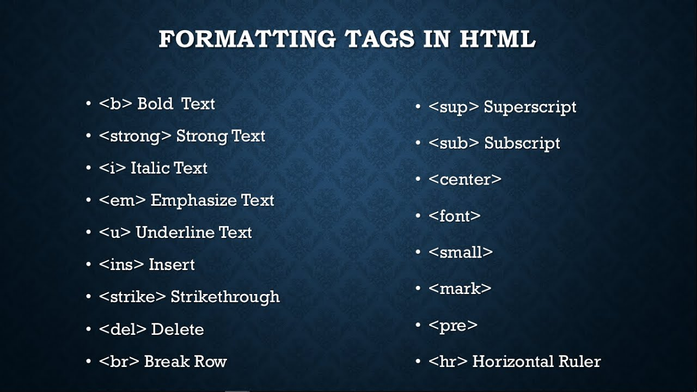

b tag is used for bold content hr tag is used provide horizontal ruler
strong tag is used for bold content it is perfered by search engine than b tag
i tag it is used italic format
em tag is used for italic content it is perfered by search engine than i tag
u tag is underlinethe content
strike it is to underline the content
del tag used to delete the content which is not recognized by search engine
ins tag is used to replace the deleted word by del and br is used to break the line
sup is used to write the math formuals (a+b)2
sub is used to write the chemistry formuals H2O
this is center tag
this is big tag will make content big
this is small tag used to show content small
this is pre tag used to preformat the content add content as it in internet
this is mark tag default mark colour is yellow